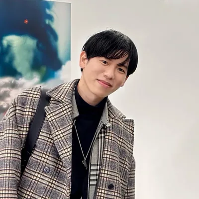

PROJECT 01 — ミカタグループ（ミカタ税理士法人） / 2026
サポート終了の電子文書システムから、AI対応システムへの移行
長年使ってきた文書システムはサポートが終了し、保存形式もAIが直接読めないものだった。この文書をPDFに変換し、AIが読める状態へ移行。全国634名が使うため、ITリテラシーの差を踏まえ、教育コストと移行の手間を抑えるUI/UXで設計・実装した。
現場の制約から出発し、既にある環境を働かせて成果へ変える。プロダクト／UI・UX を中心に、設計と実装をひとりで一気通貫するデザイナー。

かんだ ゆうさく
愛知県 名古屋市出身
名古屋芸術大学 デザイン学部 入学
名古屋芸術大学 デザイン学部 卒業
ARアドバンストテクノロジ株式会社にてインハウスデザイナーとして勤務
大名古屋電脳博覧会 2017 展示
Sony Fashion Entertainments「FES Watch U Creative Festival」デザイン採用
病気療養のため退職（現在は回復）
ミカタ税理士法人にてインハウスデザイナーとして勤務
「ながくてアートブック」開催（企画及び運営）
現在に至る
社内の文書は、すべて独自形式で管理・蓄積されていた。専用ソフトがなければ開けず、公式サポートは終了し、機能のカスタマイズもできない。顧客への納品時には、毎回PDFへ変換する必要があった。
社内にはすでに Google Workspace の Gemini があり、現場でも自発的にAIを使った効率化が始まっていた。とはいえ書類は独自形式のままで、AIにそのまま渡せるものは限られていた。
このシステムを使う社員は全国で634名おり、ITリテラシーにも差がある。ヒアリングで見えたのは、元データと変換後データの二重管理が人によってばらばらなこと、そして操作感が変わると使われなくなること、の2つだった。
ドロップするだけで変換し、サブフォルダも自動で検出する。処理はPC内で完結し、データは外に出ない。専用ソフトなしで開ける状態になる。
複数のPDFをまたぐ階層グループ化を、Acrobat互換のしおりとして書き出す。日本式の電子押印や結合にも対応し、変換ツールからワンクリックでつながる。
これまでは一つひとつ手作業で変換していた。PDFに置き換わったことで書類を投入するだけになり、作業時間と資料の品質の両方が改善した。
Google Workspace を導入してAIによる業務改善を進めてはいたが、文書がその形式のままではAIに読み込めず、AIはメール文を作る道具という認識にとどまっていた。サポートの終わった形式のまま重要な書類が保存され続ける状況も放置できないと考え、着手した。
会社に導入する前に、自分の負担で検証し、業務用の資料を実際に作って代表に提示した。結論は「Gemini の置き換えではなく、役割が違う」。以降は実装を Claude、日常の分析を Gemini と使い分け、現在では一部の部署で必須のツールになっている。
工程の順番でいえば、着手すべきは変換ツールだった。しかし代表に必要性を示すには、代替の効かないものから作る必要があった。変換は「できない」のではなく「非効率」の問題である。一方、PDFにした後の編集・階層管理・押印には、代替のツールが存在せず手段そのものが無かった。プレゼンのしやすさも踏まえ、手段の無い側——編集ツール（pdf-annotator）から着手した。
すべてを1本にまとめると操作が複雑になり、工程によっては使わない機能も出てくる。そのため、機能を3本に分けて工程をまたいでも操作に迷わないようにしている。
編集ツールを作り、代表にプレゼンをした結果、現システムの不安定さに気づいていただけた。それにより、変換ツールの開発を依頼された。個人の判断で始めたものが、組織の要件になり、本格的に開発のリソースを確保できた。
現場調査で分かった一番の障害は、機能の不足ではなく「従来の操作を変えること」だった。UXを同じ操作手順にそろえ、メールなどでお客様にファイルを送る際に重すぎる問題もあったため、dpi は「印刷用・画面用・メール用」と用途の言葉に置き換えた。使い慣れた操作の上に載せ、目新しさは加えず、シンプルな操作で動くようにした。
ドロップするだけで変換し、サブフォルダも自動で検出する。処理はPC内で完結し、データは外に出ないため、セキュリティ面でもクリアに。専用ソフトも不要で開ける状態となり、人によってPDFを確認するツールが異なるという状況を改善。
複数のPDFをまたぐ階層グループ化を、Acrobat互換のしおりとして書き出す。日本式の電子押印やドラッグ&ドロップでの結合にも対応し、変換ツールからワンクリックでつながる。これで、書類の管理がPDF上で完結可能に。
PDFツールで管理している書類を分析できるようにツールを作成。書式がばらばらでも、項目構造（JSON）で抽出し、Excelへ自動転記する。これにより専属の人を用意する必要がなく、すぐに保険の加入状況や返戻率がわかるように。
3本のツールを通したことで、書類はAIが分析できる状態になった。Geminiに書類をそのまま読ませ、転記ミスの確認、顧客情報の分析、複数年度の比較ができる。従来は目視確認だけだった工程がAI＋目視の二重確認になり、コピペミスを含む人為的なミスを減らすことに成功した。
年間約1,200万円のコスト削減を試算（Adobe Acrobat Standard 約1,580円/人/月 × 634名）。「変換 → 編集 → AI分析」の社内フローを一本化し、人の仕事を、転記から精査・解釈・顧客提案へ移した。また、操作感も現在のツールをベースにしているため社内教育等も必要最低限で抑えた。
TOP へ戻る各プロジェクトに紐づく制作物の一覧です。並び順と見出しは、各プロジェクトページの構成と対応しています。作品をクリックすると画像を拡大表示します。「プロジェクトを読む」から、判断と経緯をまとめた各プロジェクトへ移動できます。